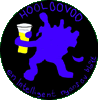

Här har jag samlat listor från Superfesteriets hemsida samt länkar till diverse festerier som funnits
| Piraya Est. 1985 Gamla hemsidan Nyare hemsidan |
Tekniska Datavetare (Numera C och DV) Fler bilder finns på äldre versioner av acc hemsidan. Titta gärna igenom flera års snapshots. |
|
| OND Est. 1993 | Datavetare, Fysiker och Matematiker (Numera Life Science) | |
| Faust Est. 1992 | Tekniska Fysiker, Energiteknik och Öppen Ingång Från början grundades "Fysiks Klubbmästeri" 1992 för tekniska fysikerna. Efter något/några år döptes den om till feSTeriet och blev för hela Teknologsektionen. Dock någonstans kring '97 döptes den om till Faust och återigen bara blev för de tekniska fysikerna. När F-sektionen blev till och Civ. Energiteknik samt Civ. Öppen ingång började blev de också del av Fausts målgrupp. |
|
| Homer Est. 1998(?) | Energiingenjörer/Maskiningenjörer (Numera heter det Energiteknik och inte Energiingenjör) | |
| Mamma Muu | Tekniska Biologer (Numera Bioteknik) | |
| Cyber6 Est. 1998 | Dataingenjörer (Numera elektronik och datateknik/medicinsk teknik) | |
| Hooloovoo Est. 2002 |  | Biologi och Geovetenskap |
| Corax | Medieingenjörer Programmet etablerades 1995 och någonstans innan 1998 grundades festeriet. 1998: "Medieingenjörernas gamla festeri får sex nya medlemmar och döps till Corax" |
|
| Bamse Est. 1998 | Molekylärbiologer | |
| Elof | Elektroingenjörer | |
| B.R.I.S. | Biologer och Geovetar/Geoekologer | |
| HÄLGE | Miljö och hälsoskydd | |
| SPIFF Est. 1991 | DVL (Datavetenskap) |